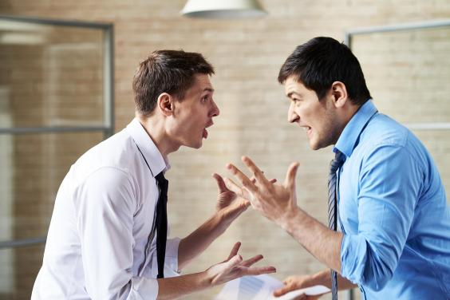

Political Extremism can seriously harm society at large, regardless of whether it's left or right. Terrorist attacks in particular are specifically linked to political extremism, being defined by attacker intent to further a political goal through distruction and harm. Even outside of terrorism however, extremists tend to be more likely to use violence or other dangerous methods to achieve their goals. The January riot at the White House is real world proof of this- in fact the impetus for this attack was through Donald Trump calling for a rally at the White House via Twitter. Extremism can be directly linked to violence, which leads to increased fear in the general population along with potentially embolding other extremists to commit similar acts. Fear in particular can lead to distrust and a willingness to follow equally extreme methods to try and combat the treat. Those with extreme political views also tend to view their ideals as being morally superior to all others, which degrades their relationships with those who don't share their beliefs. All of this is amplified by the fact that these people gained their ideologies through social media, which is notoriously full of misinformation and fake news articles meant to attract attention and rile you up. As such many of these extremists reported political beliefs aren't accurate to what they actually believe.
As discussed previously, terrorist attacks cause harm and destruction to buildings and the general environment, along with decreasing trust in the stability of the government which can have a significant effect on the stock market. The destruction caused by terrorism can have quite a lot of economic cost when you combine the property damage, damage to public infrastructure such as roads, and lost work hours from either the loss of physical workplace, death, or time off due to death of others. On the bright side, the resurgance of leftist ideologies into the mainstream via social media has led to advocacy against many economic problems, such as income inequality and poverty, on a scale not possible before. However this benefit, along with most others, doesn't require extremism to be attained. Increased political discussion and openness to ideas tarnished by our society would suffice in increasing advocacy in these areas, and while it can be argued that more polarization will naturally come with such information, the structure of social media and how it's designed to keep you on the site has increased the prevalance of such to an unneccessary degree. Unfortunately the emotional nature of politics, especially the more social justice oriented sides of it, can actually be of economic benefit to these social media companies, irregarless of the harm caused by what they promote and/or allow on their sites.
As political extremism is comprised of various far right and far left political ideologies, it should be no surprised that increased extremism has an effect on the political landscape. While some of this has been positive, such as an increased push for and acceptance of trans rights, a lot of it is rather misinformed. For example, many leftists in the online space have mashed together the social justice movement and communism, claiming that a communist society is a socially just one. However, communism is an economic ideology. It has nothing to do with social justice and indead many communist countries such as the Soviet Union have had extremely homophobic and anti-religious policies. The only inequality communism can directly address is classism, and even if communism was a perfect economic system with no inequality between different identities that only covers a fraction of what discrimination is. Yet despite this online leftists have tied these two ideologies together so tightly that they believe one cannot exist without the other, therefore becoming blind to the flaws in the communist system and their fellow communist allies when it comes to social justice. This severely affects the ability for good political discourse to occur, as what you think communism is might be completely different to what someone else believes it entails, leading to a rather poor and unproductive argument at best.
Political extremism has been a problem long before the Internet, but social media has given it a new life. The ramifications are slowly creaping into the real world, and we'll likely see them continue to mount up unless these social media companies take action against it. Unfortunately the emotions produced by extremism have strong economic incentive for these companies, so they continue to proliferate them until the backlash becomes so intense that it is no longer worth it, only for those more mainstream extremists to be replaced as quickly as they left. These companies need to face consequences for allowing this behavior to manifest, or we may see society fall into a disorganized disaray, caused by emotionally vulnerable people who do not truly understand the consequences of their violent acts.
{kind=link}